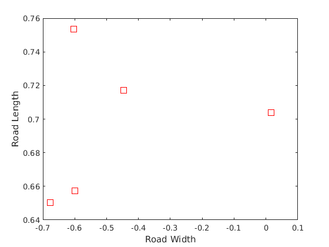
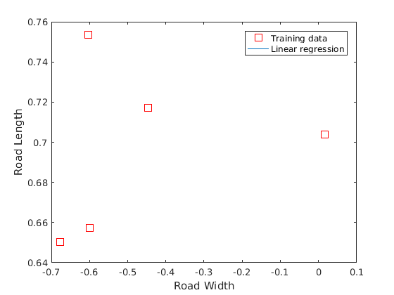
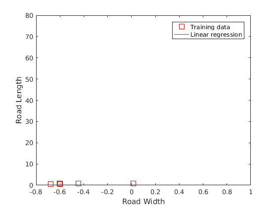

Machine Learning Online Class - Exercise 1: Linear Regression
Contents
- Initialization
- ==================== Part 1: Basic Function ====================
- =================== Part 3: Gradient descent ===================
- ============= Part 5: Compute safety distance using projection =============
- ============= plot
- ============= Part 4: Visualizing J(theta_0, theta_1) =============
Initialization
clear ; close all; clc
==================== Part 1: Basic Function ====================
load('safe_roads_rand.mat'); frame_id = 3; % get frame configs idx = find(configsLog(:,7) == frame_id); configs = configsLog(idx,1:6); % get frame safe mincut nodes idx = find(safeMincutLog(:,2) == frame_id); mc_idx = safeMincutLog(idx,1); mc_configs = configs(mc_idx,:); data = mc_configs; % set data for gradient descent X = data(:, 1); y = data(:, 2); slope = mean(data(:,4))-90 m = length(y); % number of training examples % Plot Data % Note: You have to complete the code in plotData.m plotData(X, y); fprintf('Program paused. Press enter to continue.\n'); % pause;
slope = -90 Program paused. Press enter to continue.
=================== Part 3: Gradient descent ===================
fprintf('Running Gradient Descent ...\n') X = [ones(m, 1), data(:,2)]; % Add a column of ones to x theta = [0; 0]; % initialize fitting parameters % theta = [0; tand(slope)]; % initialize fitting parameters % Some gradient descent settings iterations = 1500; alpha = 0.01; % compute and display initial cost computeCost(X, y, theta) % run gradient descent theta = gradientDescent(X, y, theta, slope, alpha, iterations) % print theta to screen fprintf('Theta found by gradient descent: '); fprintf('%f %f \n', theta(1), theta(2)); % Plot the linear fit hold on; % keep previous plot visible plot(X(:,2), X*theta, '-') legend('Training data', 'Linear regression') hold off % don't overlay any more plots on this figure % %% ============= Part 4: Compute safety distance ============= % xval = X(:,2); % yval = X*theta; % [x y] = meshgrid(1:m,1:m); % dist = sqrt((xval(x)-xval(y)).^2 + (yval(x)-yval(y)).^2); % [max_val] = max(max(dist));
Running Gradient Descent ...
ans =
0.2432
theta =
NaN
-Inf
Theta found by gradient descent: NaN -Inf
 ============= Part 5: Compute safety distance using projection =============
safe_mc = data(:,2:4); norm_factor = sqrt(theta(2)^2 + 1); a = -theta(2); b=1; c=-theta(1); % a = 0; b=1; c=-0.5; point_dist_to_line = (safe_mc(:,1:2)*[a;b] + c)/norm_factor; idx = find(abs(point_dist_to_line) < 0.5); % point_dist_to_line = point_dist_to_line(idx); % safe_mc = safe_mc(idx,:); idx1 = find(point_dist_to_line < 0); idx2 = find(point_dist_to_line >= 0); mc1 = safe_mc(idx1,:); mc2 = safe_mc(idx2,:); mean(mc1(:,3)) mean(mc2(:,3)) % points = safe_mc - dist*[cosd(90+slope) sind(90+slope)]; points = safe_mc(:,1:2) + [point_dist_to_line.*[cosd(safe_mc(:,3))./(sind(slope-safe_mc(:,3)))] point_dist_to_line.*[sind(safe_mc(:,3))./(sind(slope-safe_mc(:,3)))]]; hold on plot(points(:,1),points(:,2),'bo'); xval = points(:,1); yval = points(:,2); [x y] = meshgrid(1:numel(point_dist_to_line),1:numel(point_dist_to_line)); dist = sqrt((xval(x)-xval(y)).^2 + (yval(x)-yval(y)).^2); % [max_val] = max(max(dist)) [safety_value, maxIndex] = max(dist(:)); [row, col] = ind2sub(size(dist), maxIndex); % plot(points(row,1),points(row,2),'r*'); % plot(points(col,1),points(col,2),'r*'); safety_value % %% ============= Part 5: Compute alternative safety distance using projection ============= % safe_mc = data(:,2:3); % norm_factor = sqrt(theta(2)^2 + 1); % a = -theta(2); b=1; c=-theta(1); % dist = (safe_mc*[a;b] + c)/norm_factor; % % points = safe_mc - dist*[cosd(90+slope) sind(90+slope)]; % hold on % plot(points(:,1),points(:,2),'bo'); % xval = points(:,1); % yval = points(:,2); % [x y] = meshgrid(1:m,1:m); % dist = sqrt((xval(x)-xval(y)).^2 + (yval(x)-yval(y)).^2); % % [max_val] = max(max(dist)) % [maxNum, maxIndex] = max(dist(:)); % [row, col] = ind2sub(size(dist), maxIndex); % % plot(points(row,1),points(row,2),'r*'); % % plot(points(col,1),points(col,2),'r*'); % maxNum
ans = NaN ans = NaN safety_value = NaN
============= plot
configs = safe_mc;
x_prm = configs(:,1);
y_prm = configs(:,2);
t_prm = configs(:,3);
u_prm = cosd(t_prm);
v_prm = sind(t_prm);
quiver(x_prm,y_prm,u_prm,v_prm,0.5,'g')
 ============= Part 4: Visualizing J(theta_0, theta_1) =============
fprintf('Visualizing J(theta_0, theta_1) ...\n')
% Grid over which we will calculate J theta0_vals = linspace(-10, 10, 100); theta1_vals = linspace(-1, 4, 100);
% initialize J_vals to a matrix of 0's J_vals = zeros(length(theta0_vals), length(theta1_vals));
% Fill out J_vals for i = 1:length(theta0_vals) for j = 1:length(theta1_vals) t = [theta0_vals(i); theta1_vals(j)]; J_vals(i,j) = computeCost(X, y, t); end end
% Because of the way meshgrids work in the surf command, we need to % transpose J_vals before calling surf, or else the axes will be flipped J_vals = J_vals'; % Surface plot figure; surf(theta0_vals, theta1_vals, J_vals) xlabel('\theta_0'); ylabel('\theta_1');
% Contour plot figure; % Plot J_vals as 15 contours spaced logarithmically between 0.01 and 100 contour(theta0_vals, theta1_vals, J_vals, logspace(-2, 3, 20)) xlabel('\theta_0'); ylabel('\theta_1'); hold on; plot(theta(1), theta(2), 'rx', 'MarkerSize', 10, 'LineWidth', 2);